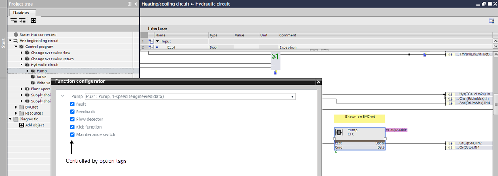
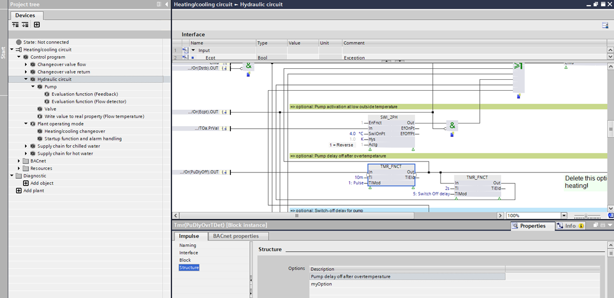
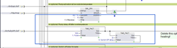
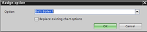
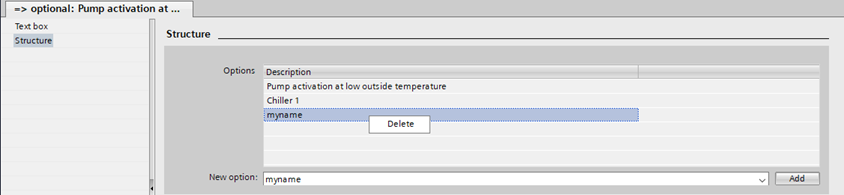

定义选项标签
选项标签允许删除不必要的（可选）控制程序部分，例如泵功能中的维护开关。可以为每个对象单独输入标签，也可以使用多选功能输入标签。可以为相应对象选择或取消选择定义的选项。这使得函数的控制编程具有高度的灵活性。

Add a option tag to a function block or object
- The Programming editor is open.
- A control program is available.
- In the Project tree, select a control program.
- The control program opens.
- Select an object in the control program.
- Select the Properties tab.
- Select the Structure section.
- In the New option drop-down list, select an option or enter an own option name. The defined name will display as a new or modified option tag.
- Click Add.
- The option displays in the Structure section. Up to 10 options can be defined for an object. A nested module, for example, a pump supports only 1 option.

- Save the control program to the custom library.
Add an open tag to multiple function blocks or objects
- The Programming editor is open.
- A control program is available.
- In the Project tree, select a control program.
- The control program opens.
- Place the mouse pointer and mark the required objects.

- The objects within the frame area are marked with blue frames.
- Right-click of the objects and select Assign option.
- The Assign option dialog box opens.
- In the Option drop-down list, select an option or enter an own option name. The defined name will display as a new or modified option tag.
- (Optional) Activate the Replace existing chart options check box.

- Click OK.
- The option displays in the Structure section for all selected objects. Up to 10 options can be defined for an object. A nested module, for example, a pump supports only 1 option.
- Save the control program to the custom library.
Delete an option tag to a function block or object
- The Programming editor is open.
- A control program is available.
- In the Project tree, select a control program.
- The control program opens.
- Select an object in the control program.
- Select the Properties tab.
- Select the Structure section.
- Select the desired option.
- Right-click the option and select Delete.

- The option tag is deleted.